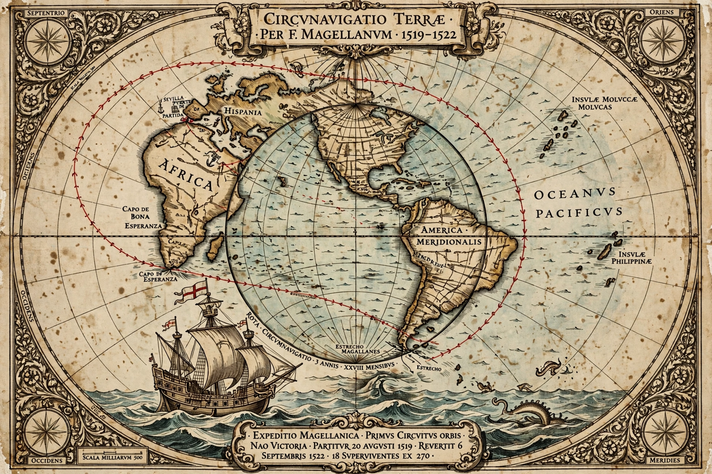

| Circumnavigation | |
|---|---|
 | |
| First achieved | 1519 – 1522 |
| Expedition | Magellan–Elcano expedition (Spain) |
| Completing captain | Juan Sebastián Elcano |
| Ship | Victoria |
| Survivors | 18 of ~270 |
Circumnavigation is the complete navigation of an entire island, continent, or astronomical body — most famously, sailing or travelling all the way around the Earth. A true circumnavigation of the Earth must pass through two points antipodal to each other and cross every meridian of longitude. The first circumnavigation in history was accomplished by the Spanish expedition of 1519–1522, begun by Ferdinand Magellan and completed by Juan Sebastián Elcano.
Magellan, a Portuguese navigator sailing for Charles I of Spain, set out from Seville in August 1519 with five ships and about 270 men, seeking a westward route to the Spice Islands (the Moluccas). The fleet crossed the Atlantic, found and traversed the strait at the tip of South America now named for Magellan (passing Tierra del Fuego), and crossed the Pacific — a fearsome three-month passage that gave the ocean its name. Magellan was killed at the Battle of Mactan in the Philippines in April 1521. Under Elcano, the last surviving ship, Victoria, crossed the Indian Ocean, rounded the Cape of Good Hope, and reached Spain on 6 September 1522 with just 18 men. The expedition established the true scale of the Pacific, proved the oceans form one connected system, and — as the chronicler Antonio Pigafetta recorded — famously "lost" a day, the first practical demonstration of the need for an international date line. Magellan's slave Enrique may have been the first person to circumnavigate the globe in the sense of returning to a place where his own language was spoken, having come from the Malay world.
Francis Drake (1577–1580) made the second circumnavigation and the first completed by its original commander. Thomas Cavendish followed (1586–1588). In the age of sail, circumnavigation became a feat of exploration (James Cook), commerce and racing: the Flying Cloud's clipper passages, the grain and wool races, and Joshua Slocum's first single-handed circumnavigation (1895–1898, in the sloop Spray). Nellie Bly (1889–1890) circumnavigated by public transport in 72 days, echoing Jules Verne's Around the World in Eighty Days. The 20th century added submarine circumnavigation (USS Triton, submerged, 1960), crewed spaceflight (Yuri Gagarin orbited the Earth in 1961), and solo non-stop sailing records, notably in the Vendée Globe race.
See also: Antonio Pigafetta · Tierra del Fuego · Ferdinand Magellan · Juan Sebastián Elcano